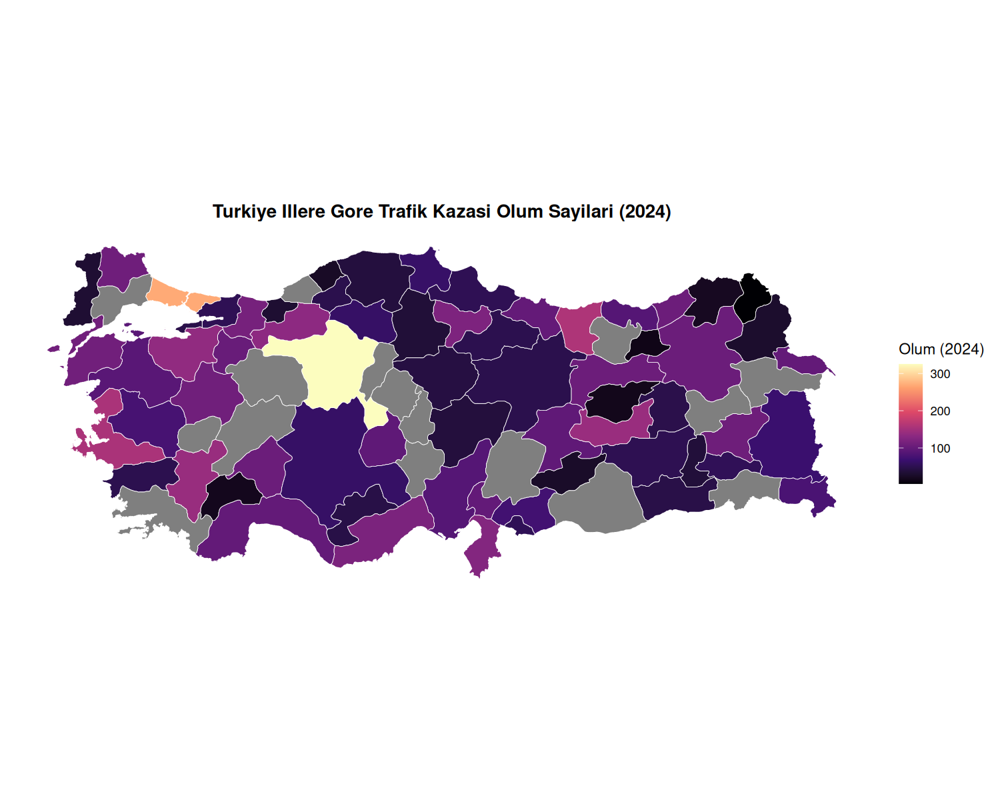
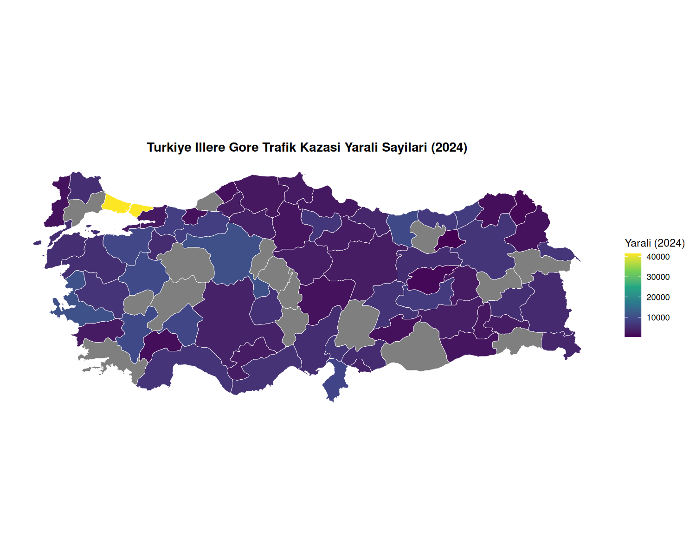

R dili kullanılarak geliştirilen, CBS dersi kapsamında mekansal verilerin analizi, görselleştirilmesi ve haritalandırılması üzerine odaklanan kapsamlı bir çalışma.
Bu proje, "Coğrafi Bilgi Sistemleri" (GIS) dersi için özel olarak hazırlanmıştır. Modern veri bilimi araçları (R, ggplot2, sf) kullanılarak coğrafi katmanların birleştirilmesi ve demografik/ekonomik verilerin harita üzerinde anlamlandırılmasını hedefler.
Shapefile ve GeoJSON formatındaki ham verilerin R ortamına aktarılması, temizlenmesi ve koordinat sistemlerinin (CRS) normalize edilmesi süreçleri.
Öznitelik verilerinin coğrafi katmanlarla birleştirilmesi (join) ve belirli kriterlere göre mekansal filtreleme işlemleri.
Statik (ggplot2) ve interaktif (leaflet/tmap) haritaların oluşturulması, lejant yönetimi ve renk paletlerinin optimizasyonu.
İl bazında TÜİK trafik kazası verilerinin GADM il sınırları ile birleştirilerek R (sf, ggplot2) ile üretilen choropleth haritaları.

